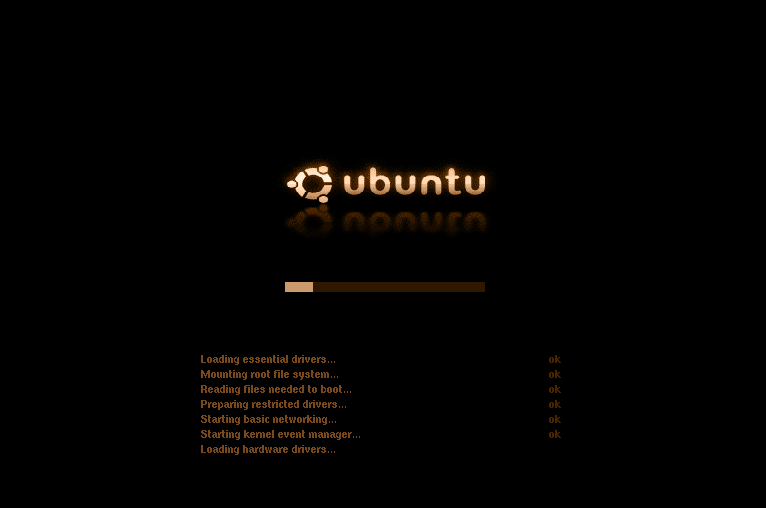
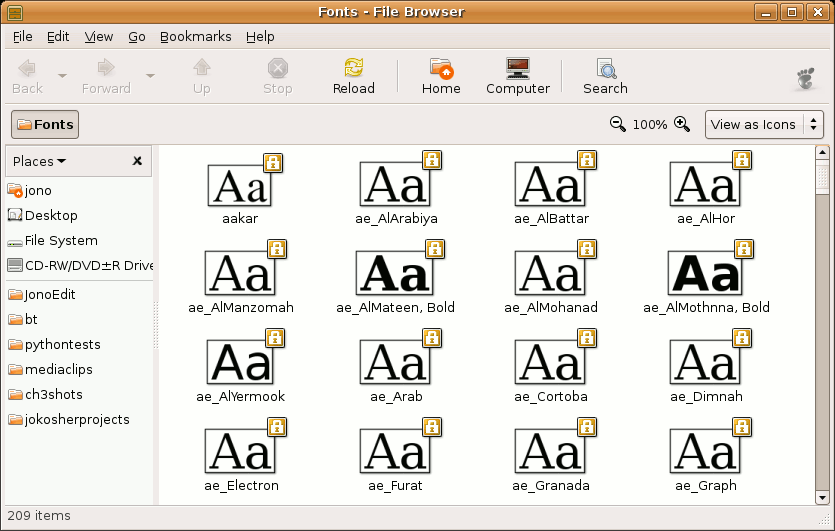
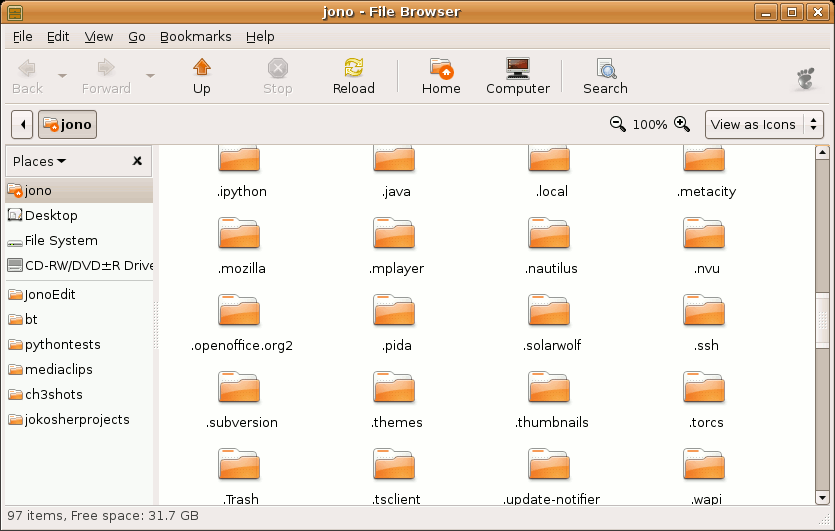
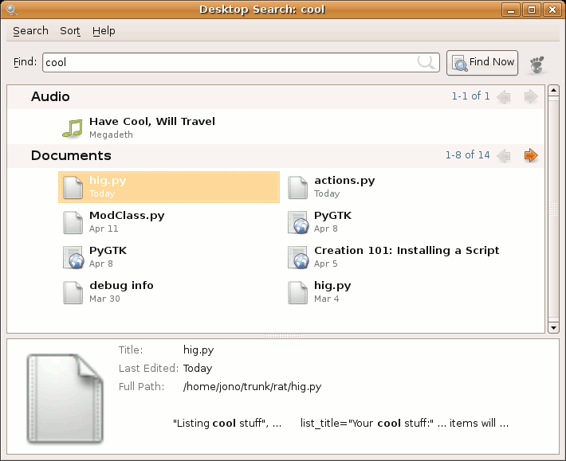
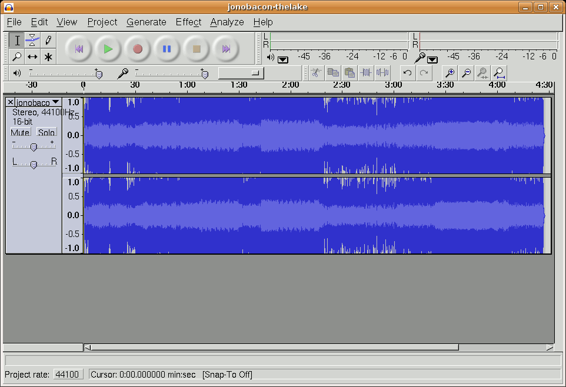
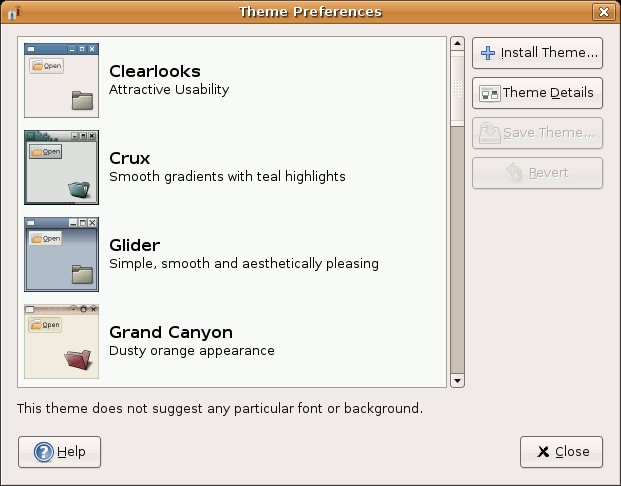
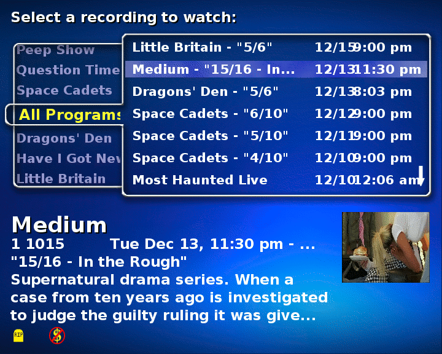
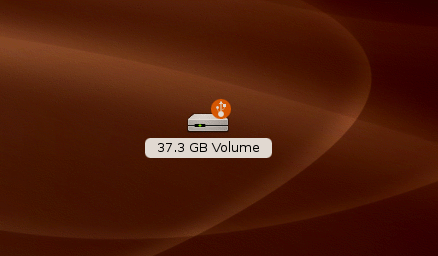
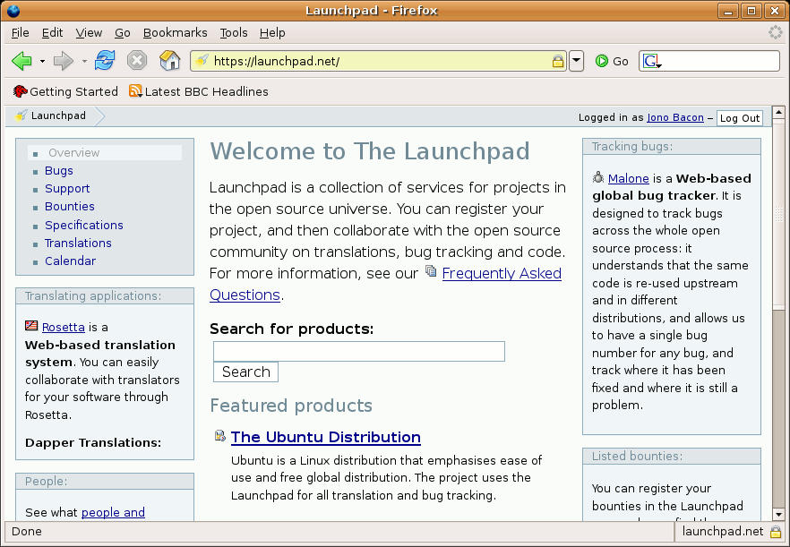

Support and Typical Problems
For more information about The Official Ubuntu Book, or to purchase a copy, visit http://www.prenhallprofessional.com/title/0132435942. It is also available at technical bookstores everywhere.Written by Jono Bacon and including contributions from Ubuntu community members.
Despite the fact that the Ubuntu developers work tirelessly to make the Ubuntu user experience as fluid and problem-free as possible, there are always going to be bugs, glitches, and errors in software. This is nothing unique to Ubuntu; it is a characteristic that is applied to all software. Anything created by humans is subject to error.
One of the many benefits of the Open Source development process is that errors and bugs are typically reported, found, and fixed in a far shorter timeframe than is the case with proprietary software. This ensures that the software included with Ubuntu is far more solid and stable than some proprietary alternatives.
Although bugs are typically fixed quickly, there is still the case of user error. Even if a piece of software is completely bug-free, it can be used incorrectly, be misconfigured, or otherwise not work as expected. This is perfectly normal, and the aim of this chapter is to discuss some of the most common problems faced by users and explore how to fix or otherwise resolve these issues.
This chapter is presented in a cookbook format, presenting each problem followed by a concise solution. If you have read through the other chapters in the book and not found the solution in this chapter, the next option is to try the superb Ubuntu Forums at www.Ubuntuforums.org/. In recent years, the forums have proved to be a goldmine of useful information. Not only do they include discussion about problems and issues that other people have, they are also laden with community contributed how-to articles that cover a wealth of different areas.
Before You Begin
As is the case with most books, there simply isn't room to cover everything in great detail. Part of the challenge when you face a problem is in identifying what the cause is, which you can then explore using the forums, IRC, Web searches and more. In many of the problems below, we will point you to other resources that provide more information about fixing the problem.Your System
Your Ubuntu system is a little like an eco-system. For certain things to work, other things must be already working. When you are new to any operating system (OS), it can often be a little difficult to get to know how some of these core system functions work.In this section we cover the core system technology in Ubuntu and problems that can crop up when using it.
Ubuntu Won't Start!
When Ubuntu first starts, the GRUB bootloader loads an OS for you. If you only have Ubuntu installed on your computer, it is loaded automatically. Otherwise, if you have more than one OS (such as Ubuntu and Microsoft Windows), you can pick the relevant one from a menu. If you don't see the menu, restart your computer, wait until you see the word GRUB, and press Enter. Now use your arrow keys to select an option.The core chunk of software that is loaded when Ubuntu starts is the kernel, and sometimes there are a few different kernels installed on your system. On the menu, each kernel version (such as 2.6.15) has two options: the stock kernel and one called "recovery mode." Try booting the newest nonrecovery mode kernel, and see if your system starts.
The Bootloader
If your system still fails to start, it is likely that your bootloader
is broken. When you use a bootloader such as GRUB, a tiny file (called
the boot sector) is copied into the very first part of your hard disk.
If this file is broken or corrupted, your system often won't boot.
Don't worry though, you can fix this! Restart your computer, and choose
the newest rescue mode option. When using rescue mode, the system
starts in a limited single-user command line mode. You can use this
mode to fix any problems from the command line. In this case, you need
to fix the GRUB bootloader. To do this, go to /boot/grub, and load menu.lst in a text editor. Unfortunately we don't have the space to cover GRUB configuration here, so it is recommended that you consult the excellent documentation on the GRUB Web site at www.gnu.org/software/grub/.
Backing Up and Restoring Your Boot Sector
When GRUB runs, the boot sector part of your hard disk contains information about which OS you can boot. This sector sometimes gets corrupted due to a system crash or power loss and your computer won't boot. Luckily, with a few carefully chosen commands, you can back up and restore this important sector.Back it up using this command:
foo@bar:~$ sudo dd if=/dev/hda of=MBR-backup bs=512 count=1
The dd command copies the sector from the first disk (/dev/hda-change this to your disk) and saves it as MBR-backup in the current directory.
Quick Tip
When referring to boot
sectors you may see it prefixed as MBR-this is short for master boot
record.
To restore the sector, run this command:
foo@bar:~$ sudo dd if=MBR-backup of=/dev/hda bs=512 count=1
To restore the sector, run this command:
foo@bar:~$ sudo dd if=MBR-backup of=/dev/hda bs=512 count=1
When you boot your computer in rescue mode, you can use these command to manage your boot sector.
The Ubuntu Logo Appears Corrupted or Just Looks Odd While Booting
When your system starts it uses a special splash image to make the boot process more attractive, as shown in Figure 6-1.

{kind=link}
Figure 6-1
The Ubuntu Desktop is simple, uncluttered, and...brown
If you have problems with this splash screen, you can disable it. To do this, load the /boot/grub/menu.lst file into a text editor, and scroll to the bottom of the file. You should see a line such as this:
kernel /boot/vmlinuz-2.6.15-10-386 root=/dev/hda1 ro quiet splash
Just remove the splash word from the line and restart your computer. Now plain text boot messages are displayed when the system starts.
When I Start My Computer I Get Text Instead of a Graphical Interface
The graphical interface used in Ubuntu comes in two parts: X and GNOME. The X server is an underlying chun of software that ensures your graphics card and monitor work, and it provides a base for GNOME to run on. The GNOME desktop uses X as an engine to create the rich desktop platform you have been using. If you start the computer and you can only see text and no graphical interface, this is a problem with X.First reboot your computer to see if that fixes the problem. When your computer has booted, if you still have the same problem, Ubuntu may have told you that it cannot start X. If you did not see this message, press Ctrl-Alt-F7 to see if you can access the graphical interface. If this does not work, there is a configuration problem with X.
X stores its configuration in /etc/X11/xorg.conf. Before you fiddle with your configuration, it is always wise to make a backup of the file. Even if X is not starting, some other parts of the configuration may be working fine.
foo@bar:~$ cd /etc/X11
foo@bar:~$ sudo cp xorg.conf xorg.conf.old
First you move to the /etc/X11 directory and then you use the cp command to copy the existing file (xorg.conf) to a backup file (xorg.conf.old). You now have both an xorg.conf and an xorg.conf.old with the same information in them.
Now run the X configuration process:
foo@bar:~$ sudo dpkg-reconfigure xserver-xorg
A configuration routine will start, and you should experiment with different settings in the routine. Unfortunately, we don't have the space to cover X configuration in detail, so refer to https://wiki.Ubuntu.com/DebuggingXAutoconfiguration.
Restricted Drivers
Ubuntu only ships with
fully Open Source graphics drivers. There are, however, closed source
drivers available for ATI and NVidea cards. For more information about
these drivers, visit the respective manufacturer's Web site.
I Tried to Use a Word or PowerPoint Document, and the Fonts Are All Wrong
When loading Microsoft Office documents in OpenOffice.org, the document may require Windows fonts that are not on your system. Many of these fonts are available online and can be automatically downloaded with the msttcorefonts package from the multiverse repository.When you install msttcorefonts, it automatically downloads and installs the following common Windows fonts:
- Andale Mono
- Arial Black
- Arial (Bold, Italic, Bold Italic)
- Comic Sans MS (Bold)
- Courier New (Bold, Italic, Bold Italic)
- Georgia (Bold, Italic, Bold Italic)
- Impact
- Times New Roman (Bold, Italic, Bold Italic)
- Trebuchet (Bold, Italic, Bold Italic)
- Verdana (Bold, Italic, Bold Italic)
- Webdings
How Do I Install a Package?
In Ubuntu, all components (applications, documentation, artwork, etc.) are split up into separate packages. Each package serves one purpose. For instance the package Firefox contains Mozilla Firefox, and Ubuntu-audio contains the Ubuntu default audio theme.To install a program, select Applications > Add/Remove. When asked for a password, enter your login password. Select a category in the left pane. This corresponds to the Applications menu. Click an empty checkbox for any application you want in the upper right pane to select it for installation. Or deinstall an application by deselecting the application's checkbox. Nothing will actually happen until you click Apply or OK. A dialog box lists the pending changes, and if you click OK the required packages are downloaded and installed (or deinstalled if that's what you chose). When it's finished, click Close.
If you can't find what you're looking for, enter a word into the search box in the upper right corner. For instance if you enter "picture," it will show the GIMP, a powerful tool to edit pictures. You can also search for a specific application, such as Patience.
When you still can't find it, or you want to install a package not listed in Add/Remove, click the Advanced button. You can also open Synaptic by selecting System > Administration > Synaptic Package Manager. Enter your login password if prompted.
First click the Reload button on the toolbar to download the latest package lists. To search for a package, click Search on the toolbar. For example, enter "Tux Paint," and click Search. Successive search queries are stored in the left pane, and the results are shown in the right pane. To install a package, click the box to the left of the name. Select Mark for Installation from the list. Synaptic will warn when other packages (dependencies) have to be installed for the package you want to install. Click Mark to automatically mark the required packages for installation. The package you've selected is highlighted in green. Packages marked for removal appear in red. For Tux Paint, you see two other packages highlighted in green. Other required packages marked for installation do not appear in the search results for Tux Paint, because they are not specifically made for Tux Paint, and hence can also be used by other applications.
To browse for packages click Components in the lower left corner. The categories presented in the left pane are not corresponding to the Applications menu. The "universe" and "multiverse" categories hold packages not supported by Ubuntu. It is advisable only to install them if you know what you are doing.
When you have selected a package, a description is shown in the bottom pane. To obtain more detailed information (such as the download and installed size), click Properties on the toolbar.
When you are done marking packages, click Apply on the toolbar. This opens a dialog where you can see the pending changes. If you are sure, click Apply. The required packages are then downloaded and installed. When it's finished, click close.
I Want to Install an Application That Is Not In Synaptic
Although Synaptic contains a huge selection of packages, sometimes the package you need is not included. The first thing you should check is that you have enabled the additional repositories such as universe and multiverse. Open Synaptic from System > Administration > Synaptic Package Manager. Now click Settings > Repositories > Add. Ensure that all of the Components check-boxes are selected. See https://wiki.Ubuntu.com/AddingRepositoriesHowto for more details.The Repository Run-Down
The universe repository
contains the thousands of packages that are part of the Debian
distribution, upon which Ubuntu is based. All of these packages are
entirely free and supported by a community of Ubuntu contributors.
The multiverse repository contains a number of packages that are freely available to download but are not fully Open Source. If you only want to run Open Source software, you may not want to use this repository.
The multiverse repository contains a number of packages that are freely available to download but are not fully Open Source. If you only want to run Open Source software, you may not want to use this repository.
If you have enabled these extra repositories and your package is still not there, have a quick hunt around with a search engine to see if you can find a repository (known as a Debian or APT repository) for your package. If you find one, use the Repositories dialog box you have just played with to add the new repository, and then use Synaptic to install the package.
If no repository is available, look for a Debian package (.deb) for the application. If you find one, download it, and double-click it to install. If no Debian Package exists, look for an Autopackage. (Details about Autopackage installation are in the next section.)
Finally, if all else fails, download the source code and compile it.
Nautilus Is Painfully Slow-How Can I Make It Run Faster?
There are a number of options you can deactivate to make using Nautilus a faster process. First, click Edit > Preferences, find the tab marked Preview, and click on it. If Show Text in Icons (the first option) is enabled it will preview some of the contents of text documents in their icons. Set this option to Never. Next, there's an option called Show Thumbnails. This option will preview image files as thumbnails. Set this option to Never to further improve the speed of Nautilus browsing. If enabled, the option Preview Sound Files will make it possible to preview sound files without actually opening them. Set this to Never as well. The last option, Count Number of Items, shows how many items are within the folders listed in the directory you're currently browsing. Set this to Never.If you are still not satisfied with the speed of Nautilus, you could check out some other file managers, such as Rox Filer or Thunar.
Add TrueType Fonts to Your Desktop Quickly
Fonts have a huge impact on how attractive and usable your desktop is. Although Ubuntu comes with a range of high quality fonts, you may want to install some additional fonts. This is often the case when you need to use a specific company font. On modern OS, most fonts come in the form of TrueType fonts. Ubuntu offers full support for TrueType fronts, and it is simple to add new fonts.To add a font, press Alt+F2. In the resulting dialog box type fonts:///, and press Enter. A font folder opens up such as that seen in Figure 6-2. Drag and drop your new font(s) to the folder that opens up.

{kind=link}
Figure 6-2
Installing fonts is as simple as dropping them in the font directory.
To check to see if the new fonts are installed, press Alt+F2, and in the dialog box type ~/.fonts. You should see your new font in the folder that appears. Try out the new font in an application such as GIMP. You will have to restart open applications before they detect the new fonts.
Note
If you perform these steps
as an ordinary user, the fonts will only be available to your user
account.
How Can I Test That an ISO File Works?
Whenever you download a Linux distribution such as Ubuntu, you will typically download an .iso file, a file that contains an image of a CD. This file is then used to create an installation CD that can be used to install the distribution. After downloading the file you may want to first check that the file works and, second, verify that the file is a legitimate download.Checking That the ISO Works
Open a terminal, and then go to the folder where the ISO image has been downloaded. As an example, if you saved it to your disk in Firefox, it will have saved it to the Desktop folder in your home folder:foo@bar:~$ cd Desktop
To test that the ISO image works, you are going to mount it and access the files in a particular folder. First, create this folder:
foo@bar:~$ mkdir test_iso
Now mount it on that folder:
foo@bar:~$ sudo mount -o loop -t iso9660 my_iso_file.iso test_iso
That's it! Now you can browse the folder test_iso.
Verifying the ISO
To verify the iso, fire up a terminal, and run the following command:foo@bar:~$ md5sum my_iso_file.iso
Wait a little while and Ubuntu will print a "word" that is 33 characters long. Now go to the site from which you downloaded the file, and compare this word with the md5sum given by the owner of the iso file, usually a file named MD5SUMS. The words should match.
I Downloaded an Autopackage But I Don't Know How to Run It
Autopackages are software packages that install on any Linux distribution, including Ubuntu. Autopackages offer an ideal way of installing software on your system that is not available via Synaptic. If you need something Synaptic can't offer, Autopackages are a great alternative.Replacing an Application with an Autopackage
If you are running an
existing application that was installed via Synaptic, and you want to
replace it with an Autopackage, make sure that you uninstall the
application first with Synaptic. Autopackage does not work in
conjunction with Synaptic, so ensure that you remove any applications
before you install the Autopackage.
When you find an Autopackage that you want to install, download it to your desktop. Now, right-click the package, and select Properties. In the Permissions tab, select the Execute checkbox on the Owner row. Now close the dialog box, and double-click the package.
The installation program now begins, and you can just follow the on-screen instructions.
How Do I Compile an Application?
When a distribution package is not available, the source code is always available to compile with Open Source applications. Compilation is the process of converting programming code into a program that you can run and use. Although it sounds like a devilishly difficult process, it is typically fairly simple.You should first have a look on the application's Web page, or in the INSTALL or README file that is included with the code to see what software the application needs to run. When you know what is required, use Synaptic to search for the required tools. Many of the requirements will be software libraries (software that applications require to run), and these libraries typically have "lib" at the start of the package name. As an example, if you need to have the Vorbis audio codec installed, do a search in Synaptic for Vorbis, and libvorbis will be one of the packages. You should also install with -dev at the end of the package name (such as libvorbis-dev). These packages allow you to compile software for that library.
The process of compiling software involves three steps: 1) configuration, 2) compilation, and 3) installation. Open a terminal, move into the directory from which you extracted the source code, and configure it:
foo@bar:yourapp$ ./configure
When you run ./configure, it checks to see that you have all the required software. If it throws an error, it is likely that a required tool or library is missing. Find out what it is, and install it. Typically, configure will tell you what you need to install.
If the configure script works fine, compile the code with this command:
foo@bar:yourapp$ make
If a problem appears when compiling the software, it may be a bug or problem in the source code. It is best to refer your problem to the author of the code for further help.
If the compile process was successful, install the application with this command:
foo@bar:yourapp$ sudo make install
The software is now fully installed.
Quick Tip
If you want to ensure you
have all the right tools installed to build your application, run the
following command:
foo@bar:~$ sudo apt-get build-dep packagename
foo@bar:~$ sudo apt-get build-dep packagename
I Can't See the Hidden Dot Files and Folders in the File Manager
Files and directories that begin with a dot (such as .openoffice2) are typically used to store settings and configuration details for a particular application. By default, the file manager does not show these files. So how do you view, move, and copy them? Simple. Just click View > Show Hidden Files, or press Ctrl-H and your hidden files are displayed, as shown in Fig 6-3.Warning!
Don't ever mess around
with hidden files and directories unless you know exactly what you are
doing. Making the wrong move with one of these files or directories
could break something!

{kind=link}
Figure 6-3
Displaying hidden files can be useful when you need to edit them.
How Do I Restore Something I Deleted in the File Manager?
When you delete something in Ubuntu, the files are not deleted immediately and are instead moved to the wastebasket. If you accidentally deleted your important report and want to avoid limb removal by your boss, open the wastebasket by double-clicking the small wastebasket icon in the bottom right-hand corner of the screen, and then drag your files back into the file manager. The world now returns to the happy place it was before you accidentally deleted your files.The Desktop Has Hung-What Do I Do?
In the rare situation that the desktop hangs, first try and restart it by pressing Alt-Ctrl-Backspace at the same time. This kills and restarts the X server. Another method of killing the X server is to press Alt+F2 to jump to a terminal, log in, and then run this command:foo@bar:~$ /etc/init.d/gdm stop
This command stops the graphical login screen, which in turn stops the X server. You can restart it with this command:
foo@bar:~$ /etc/init.d/gdm start
My Screen Resolution Is Wrong
If your screen resolution is incorrect, click System > Preferences > Screen Resolution, and select a new resolution from the combo box.If the box does not show the resolution that you want, refer to the recipe showing how to reconfigure your X server.
How Can I Automatically Login Without Having to Enter My Login Details?
If logging in is a drag for you, click System > Administration > Login Screen Setup, and select the Login a User automatically on first bootup checkbox. In the checkbox below it, select the user who should be logged in automatically.Be careful when automatically logging in-anyone will have access to the computer when it is started. If you would prefer certain people not have access to the computer, automatically logging in may not be such a good idea.
Automatically Logging in Root
In the Security tab of the
window, you can allow root to login automatically. Although possible,
this is not recommended due to the security implications. Automating a
root login could allow anyone to tamper with your computer-so be
careful!
I Tried to Upgrade My System, but I Get an Error
If you try to install some software or upgrade your computer, and you get an error, the package manager may have tied itself in a knot. To try and resolve this, open a terminal, and run the following commands:foo@bar:~$ sudo apt-get update
foo@bar:~$ sudo apt-get -f install
The first command updates your package list, and the second command tries to fix your package manager. If this is successful the packages that failed will be installed correctly.
In addition to these commands, you can reconfigure any packages that have not yet been configured by running:
foo@bar:~$ sudo dpkg -configure -pending
I Am Running Out of Disk Space-How Do I Free Up Some Space?
If you are concerned you may be running out of disk space, there are a few techniques that you can use to clear some room. Before you do anything you should get a report of how much disk space is available. Load up a terminal, and run the following command:foo@bar:~$ df -h
The df command prints a listing of the free space on your disk. By passing it the -h option, more readable file sizes are displayed (e.g., 9.5G as opposed to 9887776). In addition to the file size, a percentage of how much space is left is displayed. If the line with / in the Mounted On column is nearing 100 percent, you need to clear some room. The / partition is where most of the software is installed.
The first thing you should do is to clean out your package cache. Every time a package is downloaded with Synaptic or with the automatic upgrade manager, it is stored in /var/cache/apt/archives/. You can clean out these packages without affecting your system. Just run the following command:
foo@bar:~$ sudo apt-get clean
With the package cache cleaned, you should now look for the largest directories on your system. This is where the command line can really come into its own. Run the following command:
foo@bar:~$ du -h /home | sort -nr | less
The du command lists disk usage for the /home directory (where users store their files). Again, the -h option makes the sizes more readable. The output of this command is fed into sort which organizes the output numerically (-n) and reverses the order (-r) to display the largest files first. Finally, the output is fed into less, which lets you scroll up and down through the listing.
Find the largest directories, and remove any unwanted files by either using the graphical file manager or the rm command.
A Graphical Option
A useful little tool
called Baobab can be installed to provide a graphical means of
exploring hard disk usage. Baobab also includes a script for Nautilus
so that you can right-click a folder to use Baobab to explore that
folder. Baobab is packaged and ready to install for Ubuntu-just use
Synaptic to download and install it.
I Deleted Something in the File Manager, but I Don't See the Extra Disk Space
When you delete files in the file manager, they are copied to the wastebasket. To finally delete them, right-click the wastebasket in the bottom right-hand corner of the screen, and click Empty the Wastebasket. A dialog box pops up asking you to confirm the deletion. Click the Empty the Wastebasket button, and the files are removed.Another Version of Ubuntu is Out-How Do I Upgrade to It?
If a new version of Ubuntu is released, the update manager will notify you via an upgrade notification pop-up bubble. To upgrade, click the Upgrade button, and follow the instructions.
If you want to manually upgrade, first find out the codename for the next version of Ubuntu (in the same vain as Warty, Hoary, Breezy, and Dapper). Now open /etc/apt/sources.list, and replace the word "dapper" with the new codeword. Now run:
foo@bar:~$ sudo apt-get updates
This command updated your package list. Now upgrade the system:
foo@bar:~$ sudo apt-get dist-upgrade
You are asked if you wish to continue. Press Y, and then press Enter to continue. Your entire system is now upgraded.
As Usual...
Remember to back up all
your important files before doing a distribution upgrade!
Applications
Applications are the lifeblood of any desktop computer, but they are also packed with configuration options, different types of functionality, and other things that could possibly trip you up. This section covers some of the common application-oriented problems in Ubuntu.When I Click the Close Window Icon My Program Doesn't Go Away
If your application seems to hang, and the window won't go away keep clicking the X icon. After a few seconds a dialog box should appear to indicate the program has become inactive and asking if you want to close it.If this does not work, you can use xkill to stop it. Press Alt+F2, type xkill, and press Enter. Your mouse cursor changes to a small skull and crossbones. Click the offending application window, and it will finally be banished to that place where naughty applications wallow.
The Upgrade Notification Bubble Keeps Appearing, and I Want It to Stop
When your system detects new upgrades are available, a small bubble appears in the notification area. To switch this off, right-click the upgrades icon, and deselect the Show Notifications option.Extending Nautilus with Scripts
The file manager driving your Ubuntu desktop is called Nautilus. This comprehensive tool is not only packaged with features out of the box, but also has the ability to be extended and improved with the use of special scripts.A Nautilus script is just an executable shell script (usually using the default Ubuntu bash shell) that is placed in a special scripts directory so that the Nautilus graphical shell can find it. This is a really neat function of Nautilus, because it allows you to extend the functionality of the file browser to do just about anything.
Scripts are invoked by selecting a file or group of files and right-clicking with the mouse to bring up a Context menu. One of the options of this menu is the Scripts submenu, which allows you to select a script to invoke on the selected files.
Installing a Script
For a script to appear on the Script submenu, it must be placed in your scripts directory and be executable. If you place an executable script in your scripts directory, its name will not necessarily appear on the Scripts menu immediately. You first must visit the scripts directory with Nautilus by using the last option in the Scripts menu. Once the directory is visited, Nautilus will know about which scripts you have, and you will be able to use them. The current location of the scripts directory is .GNOME2/Nautilus-scripts in your home directory.A Sample Nautilus Script
To get you started with Nautilus scripts, we will look at an example script. This script pops up a window to ask for a folder location and then loads Nautilus at that location. It's a simple example, but it shows you how to create a script and run it.Open your favorite text editor, and paste the following code into a new file:
#! /bin/bash
#
# GoTo script for Nautilus scripts
# by ardchoille
# This script is released under the GPL
# February 20, 2006
#
mylocation=`zenity -entry -text="Enter the desired location:"
-width=300 -title="Nautilus location"`
Nautilus -no-desktop -browser $mylocation
exit
Save the new file to your Nautilus scripts directory with the filename of "GoTo." (You can use any filename really.) Now make the new script executable with:
foo@bar:~$ chmod a+x filename
Right-click in Nautilus, and choose Scripts > GoTo, and you will be presented with a zenity dialog that asks for a valid path. After entering the path, click the OK button, and Nautilus will open with the specified path.
For More Fun and Games...
Install the
Nautilus-actions package to add an extension to Nautilus for
configuring programs to be launched depending on Nautilus selections.
I Went to a Web Site in Firefox, and the Macromedia Flash Plug-in is Missing
If you visit a Web site in Firefox and the flash plug-in is required, a small bar appears indicating that you need to install an additional plug-in. To do this, click the Install Missing Plug-ins button, and follow the instructions. When the program has downloaded and installed the plug-in, restart Firefox, and you are all set.Java is Not Installed on My System
To run a Java application on your system or access a Java Web site in Firefox, you need to install the Java libraries first. To do this, fire up Synaptic, and install the j2re1.4 and j2re1.4-mozilla-plug-in packages.If you want to run a version of Java not included with Ubuntu, refer to https://wiki.Ubuntu.com/RestrictedFormats
I Have Heard Desktop Search is Cool-How Do I Install It?
In recent months, desktop search has gained more and more coverage in different parts of the media. With the release of Mac OS X Tiger and speculation about WinFS in Windows Vista, more hype was piled on to the desktop search bonfire. You will be pleased to know that Linux users don't miss out either.The idea behind desktop search is that all files on your desktop are automatically indexed. When you create or remove a file, the index is updated. With this kind of functionality, you can use a single search interface to look for anything on your system.
The Linux implementation of desktop search is called Beagle. Beagle is still very much in development and, as such, is not included by default in Ubuntu. To install Beagle select the Beagle package from Applications > Add/Remove Applications. Beagle not only indexes the name and contents of your files, it also indexes e-mails in Evolution, instant messaging conversations in Gaim, blogs, Web pages, and more.
To perform a search click Applications > Accessories > Beagle Search, and type in your search term. Press Enter, and you will see the results such as those displayed in Figure 6-4.

{kind=link}
Figure 6-4
Beagle is simple and useful.
All Hail the Deskbar
If you install Beagle and
find that you like it, you should also install the deskbar package.
This small panel applet provides a convenient means to search for all
kinds of different things on your computer. It is simple, convenient,
and reliable.
My E-mail Doesn't Work in Evolution
When you first run Evolution it runs through the setup procedure to configure your e-mail address. To do this successfully, you need to have the following details available:- Your type of e-mail server (such as POP or IMAP)
- Your mail server name (such as mail.chin.com)
- Your mail account's username and password
- Authentication type (typically password)
- Your outgoing mail server type (typically SMTP)
- Your outgoing mail server name
The latter problem would mean one of two things: your computer is not connected to the network, or the mail server is not connected to the network. To test this, run the following command in a terminal:
foo@bar:~$ ping mail.chin.com
Replace mail.chin.com with the name of your mail server. The ping command sends a few pieces of information to the server to see if it responds. If it does respond, a series of lines will be displayed with a response time. If you get this, your network is running fine, and the problem is likely to be a configuration error.
A configuration error can either be on your computer or the mail server itself, with your computer being the far more likely candidate. You should get in touch with the person who runs the mail server and confirm that your settings above are correct. Also check that the mail server is running fine. If the configuration error is on the mail server side, there is nothing you can do until it is fixed. In this case, ask the administrator to let you know when it is fixed.
When you find out the correct configuration settings, enter them into Evolution and try again.
Multimedia
Multimedia is playing an increasingly import role in modern desktops, and most people like to listen music, watch movies, and watch videos on their desktop. Unfortunately, multimedia has had something of a checkered history in the Linux world due to the licensing problems with the all important codecs that are required to view and hear your media. This section explores some of common problems faced with multimedia and your Ubuntu desktop.Restricted Formats
You can get further help
and guidance on restricted media formats that don't ship with Ubuntu by
visiting https://wiki.Ubuntu.com/RestrictedFormats.
I Downloaded a Particular Media File, and It Won't Play
Included with Ubuntu are Open Source codecs such as Ogg Vorbis and Ogg Theora, but the vast majority of media on the Internet uses restrictively licensed codecs such as MP3, Windows Media, QuickTime, and others.Ubuntu does not ship these codecs for legal and philosophical reasons. Not only would shipping the codecs possibly breach the original license, but Ubuntu is fundamentally oriented around a totally free and Open Source desktop.
There are methods for playing these media formats, and if you want to install them, refer to the Ubuntu Forums for more details.
My DVD Won't Play
As with the previous problem, DVD playback is also a somewhat restricted process that requires special software to be installed. The software is available if needed. Again, refer to the Ubuntu Forums for more details.DVD Playback is Jittery and Jumpy
When you watch DVD movies on your computer, you may find that they are jittery and unstable. In most cases the problem is that direct memory access (DMA) mode in your DVD drive is not enabled. By enabling this mode, your problems should disappear.Check if DMA mode is enabled by running this command:
foo@bar:~$ sudo /sbin/hdparm /dev/hdc | grep dma
Most DVD drives are /dev/hdc, but change the letter if yours is different. If DMA mode is not enabled, you will see this:
using_dma = 1 (on)
To turn on DMA mode, run this command:
foo@bar:~$ sudo /sbin/hdparm -d1 /dev/hdc
Now try to play your DVD.
If this solves your problems, you should edit /etc/hdparm.conf and add the following block:
/dev/hdc {
dma = on
}
When I Start Some Applications Ubuntu Says I Don't Have Access to /dev/dsp
There are literally hundreds of thousands of applications for the Linux system, and many of them have different requirements and dependencies. One area in which this can be a problem is audio software. Each audio application relies on one of many sound servers: pieces of software that manage communication with the sound card. These sound servers come in many forms, including esd, gstreamer, arts, and jack.In Ubuntu, esd is the default sound server. Although the multimedia applications included with your desktop work fine, some other applications (such as Audacity shown in Fig 6-5) may complain when you start them that something else has access to /dev/dsp. To solve this click Applications > System Tools > System Monitor. In the list of processes click on esd, and click the End Process button. By stopping esd you can now use the application.
But Remember...
Of course, by killing esd,
those applications that require esd will not run. To use those
applications (such as the default multimedia application included in
Ubuntu) start esd by pressing Alt+F2 and typing esd into the textbox.
You will hear some beeps to indicate esd is now running.

{kind=link}
Figure 6-5
Audacity is a typical application that requires this recipe.
My Microphone Doesn't Work
Although it seems like an obvious first point to check, ensure that you have plugged your microphone into the right socket. Many computers include a number of audio inputs/outputs, and they can be easily confused. In recent years a number of hardware manufacturers seem to have gone out of their way to poorly mark these sockets, so don't worry if you get them mixed up. If in doubt, consult your manual.With the microphone properly plugged in, load up the recording level monitor by clicking Applications > Sound and Video > Recording Level Monitor, and speak into your microphone. If you see nothing appearing on the scale, you need to turn on and adjust the volume of your microphone. To do this, right-click the volume icon in the notification area, and select Open Volume Control. Inside the dialog that pops up, click the Capture tab, make sure the microphone sliders are near the top and that the small microphone icon does not have a red cross on it. This icon mutes the devices, and clicking it toggles it.
Now speak into the microphone, and you should see the recording level monitor flash. To record your voice click Applications > Accessories > Sound Recorder.
How Do I Change the Visual Theme?
To change the way your Ubuntu desktop looks, click System > Preferences > Theme, and you will see Figure 6-6.
{kind=link}
Figure 6-6
Changing themes is simple - click it, and it changes!
From there, you can select predefined themes or click details to create a custom theme. Changes are applied immediately. If you click Details, you get a dialog box with three tabs. All themes are separated into three parts: the elements (buttons, text fields, etc.), the window frame (the title bar), and icons. If you have downloaded new themes, drag them into the theme details window, and click Install. When you are done, click Close.
How Do I Find and Install New Desktop Themes and Backgrounds?
We all love tweaking our desktops so they look individual to our own tastes and preferences. Luckily the desktop is very flexible in how it can be visually configured. To make this as simple as possible, the GNOME Art Web site was created to host a huge array of wallpapers and themes. You can use the site to spruce up your desktop.Art Web Sites
There are a number of
sites that help make your desktop look pretty. See
http://art.ubuntu.com,
http://art.gnome.org
or http://gnome-look.org.
To make this even easier, there is a tool called art manager that can be used to find new themes and backgrounds, but it is not installed by default. To install it, use Synaptic to install GNOME-art. After it is installed, click System > Preferences > Art Manager to load it.
To find desktop backgrounds click Art > Backgrounds > All. If you don't want to see GNOME backgrounds, click Art > Backgrounds > Other. Alternatively, if you only want GNOME backgrounds, click Art > Backgrounds > GNOME. The art manager downloads thumbnails and descriptions of all available backgrounds. The latest backgrounds are at the bottom of the list. Select one from the list. To show the background in detail, click Preview. To install it, click Install. The change background window then shows the installed background. From there you can optionally change its style. When you're done, click Finish to get back to the art manager.
To find desktop theme elements click Art > Desktop themes > Application. The latest are at the bottom. To see a sample window displaying the selected theme, click Preview. To install the theme, click Install. Then from the Theme preferences window, click Theme-details, and select the new elements from the list. Click both Close buttons to go back to the art manager.
Finding new window borders and icon themes works similarly. You can also install splash screens and login screens, but the former are not used by default in Ubuntu (though they can be enabled in the session manager), and the latter cannot be installed directly. GTK+ engines are seldom used. None of the applications that are installed by default use it.
How Do I Turn My Ubuntu Computer Into a MythTV Box?
MythTV is a collection of applications that can convert a computer into a full fledged media center with the capability to pause live TV, record shows, play music, play videos, play DVDs, access weather information, and more. More details about MythTV are available at www.mythtv.org/. MythTV also goes to great lengths to look like a normal TV device and not like a computer plugged into a TV (see Figure 6-7 for an example).
{kind=link}
Figure 6-7
MythTV makes TV so much more fun!
To install a full MythTV system, install each of the mythtv packages that are available in Synaptic. You also need to install a few other packages:
- xmltv: This is used to grab TV listings in XML formatting
- DVD support: To watch DVDs you should refer to the Ubuntu Wiki and install the relevant packages
- lirc: Install this if you want to use a remote control
Unfortunately, we don't have the space to cover the configuration of MythTV. Instead refer to the Ubuntu Forums.
Networking
There are few modern computers that are not on the Internet now. With such an important feature, having a networking problem can feel like a crippling blow, particularly for those of us who spend extended periods of time staring at a Web browser. This section identifies some of the common problems with wired and wireless networking.I Can't Access My LAN
First check that the cables for your network are plugged in correctly. On many hubs, a small light appears when a cable is plugged into one of the sockets. Many Ethernet cards also display a connection light too.Next check if the card has been recognized by the system. To find out, fire up the Networking tool by clicking System-Administration > Networking, and you should see an icon displayed in the window that represents your network card. If there is no icon, your card has not been detected and loaded by Ubuntu.
How to Find Out If Your Device is Supported
If your device is not
currently supported, search through the Ubuntu Wiki
(http://wiki.ubuntu.com/)
and the Ubuntu Forums
(http://ubuntuforums.org/).
Searching for the name and model of your
device is most likely to return some results. Alternatively, do a Web
search for your device and Linux or Ubuntu to see if any generic
support is being worked on.
In the Networking tool, double-check that your settings are correct.
You can check if your network card is working and has an interface by
opening a terminal with Applications > Accessories >
Terminal and typing: foo@bar:~$ ifconfig
You should see a number of blocks such as eth0 or ra0. One of these blocks should have a local IP address. The format of this address depends on which IP range is on your network. The range 192.168.0.n where n is a number between 1 and 254 is commonly used. If you see an IP address in your ifconfig output, try pinging the IP that you set as the gateway. If you did not set a gateway (typically when you obtain your IP address automatically with DHCP), your IP address is likely to be 192.168.0.1. Try to send packets to this IP:
foo@bar:~$ ping 192.168.0.1
Change the IP address if your IP range is different. If you get a number of lines with a time = attribute at the end, your network card works.
If you have set up your network card to automatically grab an IP address with DHCP, you can get a new address by running the following command:
foo@bar:~$ sudo dhclient
Nameserver Problems
A common problem that users often face is that the connection to your network is working, but the addresses for the nameservers are incorrect. A nameserver (also known as a DNS server) converts Web addresses (such as www.Ubuntu.com) into the numeric IP address that is used to access the site.If you have a working connection but cannot access domains, it is certainly a nameserver problem. To test this, you will need to know an IP address. You may have been given some IP addresses for different services from your ISP. Alternatively, you can use another computer to find an IP address with which to test. Try pinging the address, and if you get pings back you know its a nameserver problem. To resolve this, specify the correct nameservers in the DNS tab.
How Do I Use ssh (Secure SHell) for Transferring Files Across a Network?
Secure shell is a protocol for connecting to remote computers in a safe way. To connect on the client side to a remote computer, click Locations > Connect to Server, and choose SSH as the service type. In the first field, enter the host name or IP address of the remote computer.The folder field can be left blank but can be used to go straight into a folder when you open the connection in the file manager. For instance, the home folder of user joe is typically /home/joe. Other folders are still accessible by clicking the up button on the toolbar. Enter the username of the user on the remote computer in the username field. If it's the same as the local username, just leave it blank. Both the folder field and the username field are case sensitive. Click Connect to proceed.
The first time you connect, a question appears that says the identity of the remote computer is yet unknown. This is normal. Click the Login Anyway button to proceed. If you are asked for a password, enter the password of the user on the remote computer. Click on remember password for this session and Connect. If the password was wrong or it took too long to enter the password, it is asked again.
The connection appears on the desktop. If you chose not to remember the password for the session or in the key chain, you may be asked again. Now you can use the remote files the same way you use them locally. You can even copy files across different ssh connections and other network protocols such as FTP.
How Do I Use a Graphical Application Remotely with ssh (Secure SHell)?
To connect on the client side to the remote computer, first open a terminal. Click Applications > Utilities > Terminal Window. Now run this command:foo@bar:~$ ssh -X user@host
where user is the user name on the remote computer, and host is the host name or IP address. If the user name is the same, leave out the user@ part. -X here signals ssh that you want to run graphical applications. Make sure you use capitals exactly as shown. Usernames are also case sensitive.
If it's the first time you are connecting, you will get a warning similar to the following:
The authenticity of host '251.152.123.101' (251.152.123.101)' can't be established.
RSA key fingerprint is 01:12:23:34:45:56:67:78:89:9a:ab:bc:cd:de:ef:ff.
Are you sure you want to continue connecting (yes/no)?
Type Yes, and press Enter. When asked for a password, enter the password of the user on the remote computer. Now you should have a shell on the remote computer, and it's possible to run commands remotely.
You can try for example Firefox to open up Mozilla Firefox, or Gaim to have a chat with yourself.
My Wireless Card is Not Working
One of the greatest new features for laptop users in Ubuntu is network-manager. With this shiny new application it is finally easy to connect your Ubuntu system to any wireless network. Where previously you had to jump through hoops to do WPA or 802.1x authentication, network-manager makes this completely transparent.Simply click on the network-manager icon to see all available wireless networks, and click on the network to connect to it. If wireless authentication is needed, be it WEP, WPA or 802.1x, a network-manager dialog will pop up asking for your authentication details.
Of course, these improvements are not limited to laptop or even desktop users. Even for machines without a GUI networking has been made easy by the Debian and Ubuntu developers who integrated WPA authentication into the standard network configuration system.
If network-manager does not solve the problem, the first step should be to see which driver your wireless card needs. Do a search for your card on Google and in the Ubuntu Forums to find out which driver you need. Many of the drivers are already included in Ubuntu, but some newer drivers may not be present.
Next, you need to find out if the driver is loaded. As an example, if you have an Intel Centrino and it uses the ipw2200 driver, run this command:
foo@bar:~$ sudo lsmod | grep ipw2200
Replace ipw2200 with the relevant driver for your card. If you get some lines returned, the driver is loaded and working. If nothing is returned, your card is either not supported or the driver is not included in Ubuntu. You should refer to the Ubuntu Forums for further support.
With the card identified, you now need to get connected. The easiest way to do this is to select System > Administration > Networking. Inside this tool you should see an icon for your wireless card. Select it and click the Properties button. Now add the name of the wireless network and a password if applicable. If you are using a normal password such as s3cr3tpass, select Plain (ASCII) from the Key type box. If you are entering the long numeric password-use the Hexedecimal option.
Quick Tip
If you don't have a
password on your wireless network, leave the Key type and WEP key boxes
empty.
If you are automatically assigned an IP address, use the Configuration box to select DHCP. Otherwise, select Static IP Address, and enter the details of your network in the boxes.
For more information, see https://wiki.ubuntu.com/HardwareSupportComponentsWirelessNetworkCards
I Need to Use WPA or I Use WPA-PSK on My Wireless Access Point
To use WPA, you need a supported card. Such cards are listed on the WPA Supplicant Web site at http://hostap.epitest.fi/wpa_supplicant/. Common drivers that support WPA include ipw2200, ipw2100, and madwifi.To use WPA (Wi-Fi Protected Access) with wireless cards in Ubuntu, the wpasupplicant package must be installed. After installing it, edit /etc/wpa_supplicant.conf. Networks are configured by adding network blocks to the configuration file. Each network block can also be assigned a priority so if both networks are seen, the higher priority network is chosen. Examples for common network configurations can be found in /usr/share/doc/wpasupplicant/examples/wpa_supplicant.conf.gz.
Some configurations require certificates that should be available from the network administrator. WPA Supplicant can also configure your wireless card to use unencrypted networks, as noted in the example file. After writing the file, edit /etc/default/wpasupplicant and change the ENABLED, DRIVER, and INTERFACE options. The DRIVER option should match the type of wireless device being used. Available drivers can be viewed by typing:
foo@bar:~$ wpa_supplicant -help
To start the Supplicant run:
foo@bar:~$ /etc/init.d/wpasupplicant start
Lastly, wpasupplicant should be added to STOP_SERVICES in /etc/default/acpi-support to ensure it functions properly after a system suspend or hibernation.
To check if the connection is working, run:
foo@bar:~$ sudo wpa_cli
This command gives information on the current connection along with scrolling logs to indicate the current status. By default wpa_cli must be run as root. Status will show what network the wireless card is currently connected to and parameters about the link. Scan causes the supplicant to look for a new access point while scan_results will display what access points are locally accessible to the machine. As soon as the supplicant authenticates ifplugd should start the interface with ifup, and networking will be available shortly. If it seems that the supplicant is not working it may be that a different driver must be selected in the /etc/defaults/wpasupplicant configuration file. Also, some cards can not operate in a mixed TKIP/CCMP (types of encryption) mode. If it appears the PTK listed in the log from wpa_cli is CCMP but that the GTK is TKIP, setting the pairwise and group entries of a network configuration block to TKIP may fix the issue.
Hardware
There are many, many different types of hardware available for computers, including Web cams, network cards, hard disks, video cards, sound cards, and more. For each of these devices to work, a driver needs to be loaded by the Linux kernel. Unlike systems such as Windows, you don't need to install a special driver that is included with the device. Instead the driver should already be included in Ubuntu and ready to work out of the box.Of course, this is not always the case, and sometimes hardware can be something of a beast to get working. In this section we tear apart some of the hardware related problems and attempt to resolve them.
Ubuntu Has Not Detected My Old Sound Card.
Many older devices are not automatically detected by the current 2.6 kernel series. This is done to avoid hardware issues such as crashes. Unfortunately if you have an older sound card, it means you need to roll your sleeves up and poke around to get it running. To do this you need to know which kernel module your card needs and then load the module yourself. Loading the correct module for your device will not cause your system to crash, but loading the wrong one may well do so. You may need to experiment with different modules.Look for the model of sound card you have by referring to your computer's specifications, the name of the device in Windows (if applicable), or by opening the computer case and looking at the sound chip. You can use Google to match a chip's serial number with the chipset type. Here is a list of devices and the relevant kernel module (taken from www.icewalkers.com/Linux/Howto/BootPrompt-HOWTO-8.html)
- snd-dummy = Dummy soundcard
- snd-mpu401 = mpu401 UART
- snd-mtpav = MOTU Midi Timepiece
- snd-serial = Serial UART 16450/16550 MIDI
- snd-virmidi = Dummy soundcard for virtual rawmidi devices
- snd-ad1816a = ADI SoundPort AD1816A
- snd-ad1848 = Generic driver for AD1848/AD1847/CS4248
- snd-als100 = Avance Logic ALS100
- snd-azt2320 = Aztech Systems AZT2320 (and 2316)
- snd-cmi8330 = C-Media's CMI8330
- snd-cs4231 = Generic driver for CS4231 chips
- snd-cs4232 = Generic driver for CS4232 chips
- snd-cs4236 = Generic driver for CS4235/6/7/8/9 chips
- snd-dt019x = Diamond Technologies DT-019x
- snd-es168 = Generic ESS AudioDrive ESx688
- snd-es18xx = Generic ESS AudioDrive ES18xx
- snd-gusclassic = Gus classic
- snd-gusextreme = Gus extreme
- snd-gusmax = Gus Max
- snd-interwave = Interwave
- snd-interwave-stb = Interwave
- snd-opl3sa2 = Yamaha OPL3SA2
- snd-opti93x = OPTi 82c93x based cards
- snd-opti92x-cs4231 = OPTi 82c92x/CS4231
- snd-opti92x-ad1848 = OPTi 82c92x/AD1848
- snd-es968 = ESS AudioDrive ES968
- snd-sb16 = SoundBlaster 16
- snd-sbawe = SoundBlaster 16 AWE
- snd-sb8 = Old 8 bit SoundBlaster (1.0, 2.0, Pro)
- snd-sgalaxy = Sound galaxy
- snd-wavefront = Wavefront
- ad1848 = AD1848
- adlib = Adlib
- mad16 = MAD16
- pas2 = ProAudioSpectrum PAS16
- sb = SoundBlaster
- uart401 = UART 401 (on card chip)
- uart6850 = UART 6850 (on card chip)
- opl3 = Yamaha OPL2/OPL3/OPL4 FM Synthesizer (on card chip)
- opl3sa = Yamaha OPL3-SA FM Synthesizer (on card chip)
- opl3sa2 = Yamaha OPL3-SA2/SA3 FM Synthesizer (on card chip)
foo@bar:~$ sudo modprobe themodule
If there is no error message, it may just be the right one! Run alsamixer to see if there is a sound device for it to configure:
foo@bar:~$ alsamixer
If the module is the wrong one, alsamixer will not allow you to set the sound parameters. If you can, add the module name to the /etc/modules file so that it gets loaded every time you boot:
foo@bar:~$ sudo gedit /etc/modules
My Cardbus Adapter is Not Being Recognized
If you have a cardbus adapter and are having difficulty getting it work, open a terminal and run this command:foo@bar:~$ sudo gedit /boot/grub/menu.lst
Find the line ## ## End Default Options ## below which you can see your kernel. As an example:
title Ubuntu, kernel 2.6.12-10-686-smp
root (hd0,0)
kernel /boot/vmlinuz-2.6.12-10-686-smp root=/dev/sda1 ro quiet splash
initrd /boot/initrd.img-2.6.12-10-686-smp
Add this to the end of the third line, one space after splash:
pci=assign-busses
It should now look like this:
title Ubuntu, kernel 2.6.12-10-686-smp
root (hd0,0)
kernel /boot/vmlinuz-2.6.12-10-686-smp root=/dev/sda1 ro quiet splash pci=assign-busses
initrd /boot/initrd.img-2.6.12-10-686-smp
Restart your computer, and your cardbus device should work.
I Plug In My USB Stick and Nothing Happens
When a USB stick is plugged in, it must be mounted before you can access it. This normally happens automatically, and you should see an icon on your desktop similar to that displayed in Figure 6-8.
{kind=link}
Figure 6-8
To use a USB storage device you just double-click the device icon that appears.
Unfortunately, in some rare cases it doesn't work. To fix it, first check that your system is set to automatically mount USB sticks. Click System > Preferences > Removable Drives and Media and look in the Storage tab. The following checkboxes should be selected:
- Mount removable drives when hot-plugged
- Mount removable media when inserted
- Browse removable media when inserted
If you still have no luck, plug the USB stick in and then click Places-Computer. If there is an additional drive in the Computer window, right-click it, and select Mount Volume.
If you still have no luck, you need to manually mount the disk. First, click Applications > Accessories > Terminal, and then plug in your USB stick. Now run the following command:
foo@bar:~$ sudo mount -t vfat /dev/sda1 /mnt
To view your files use the file manager to access the /mnt directory. Before you finish with the disk, unmount it with:
foo@bar:~$ umount /dev/sda1
Drive Names
On some computers you may
need to use /dev/sdb1 or /dev/sdc1. Type in the following command when
you have plugged in your disk to see which drives are available:
foo@bar:~$ ls -l /dev/sd*
I Copied Some Files to/from My USB Stick, but When I Access It Later the Files Are Not There
When you plug in your USB stick, Ubuntu automatically mounts it. When you copy files to or from the stick, the files are copied over in bursts. Due to the way the kernel in Ubuntu works, sometimes there can be a slight delay before your files copy. If you remove the USB stick before they have finished copying some or all of the files may not have copied over successfully.To ensure that everything you do with the USB stick is complete before you remove it, you should unmount it. To do this right-click the drive icon on your desktop or in Places > Computer, and select Unmount. Give it a few seconds. and when the light on the USB has stopped flashing, you can safely remove it from your computer.
My CD-ROM/DVD Is Not Working
If you are having problems accessing your CD-ROM/DVD drive, it is most likely because it is not mounted. Click Places > Computer and look at the CD-ROM/DVD drive icon in the window. If the drive is not mounted, the icon looks like a drive; otherwise it looks like a disc. If the drive isn't mounted, right-click it, and click Mount Volume.My CD-ROM/DVD Drive Won't Eject
If you press the eject button on your CD-ROM drive and it won't eject, click Places > Computer, right-click the CD-ROM/DVD drive, and select Eject. If this doesn't work, load up a terminal by clicking Applications > Accessories > Terminal, and type:foo@bar:~$ eject
I Bought a Device, but It Doesn't Work In Ubuntu
When you buy a hardware device such as a graphics card, sound card, DVD drive, or Webcam the device needs to have a driver installed for it to work. In the Windows world this driver is included with the device, and you simply install it after you have plugged the device in.In the Linux world things work a little differently. Your Ubuntu system includes an important piece of software called the kernel that manages how devices are used. The kernel includes a number of drivers that cover a huge range of hardware out of the box. The philosophy in the Linux world is that you should not even need to install a driver-just install the hardware, and the kernel will pick it up.
Although the kernel includes huge support for devices, there are occasions when a driver is not included. At this point you should find out if the device is actually supported in Ubuntu. To do this, search the Ubuntu forums wiki and do a general search on the Internet for your device and the keyword Linux. After a bit of hunting around you will probably find a driver that is available but obviously was not included with Ubuntu. Your first job should be to submit a bug report to say that the driver is not included in Ubuntu (see "It was suggested I file a Bug Report but I Don't Know How" later in this chapter). Include in your bug report the address of the Web site with the driver.
My Computer Says It Is Out of Memory
If you get memory errors and have a reasonable amount of memory (256MB or more) and a swap partition, your memory may be faulty. To check if your memory is working, restart your computer and when you see GRUB loading, press Escape to display the boot menu. Select the memtest option, and a small tool will check your memory for errors.The memtest utility tries its best to find problems with your memory, but there may be cases where memtest passes but the memory still has problems. To test against this, try swapping the memory with some that is known to work and see if the problems go away. If they do, the memory is certainly faulty.
How Can I Copy Photos from My Mobile Phone to My Ubuntu Computer with Bluetooth?
Ubuntu has built in Bluetooth support, but you need to install the GNOME-Bluetooth package. Inside this package is a small tool called GNOME-obex-server. This application allows you to transfer files from your mobile to your computer.
When you have installed the package, hit Alt+F2, and enter GNOME-obex-server. A small blue icon appears in the notification area, and you can now send a file from your phone via Bluetooth.
I Can Read My USB Storage Device, but I can't Write to It
If you are having trouble writing to a USB key or external USB hard drive, there are a number of possible causes of the problem.The first and most simple to diagnose is that you may not have permission to write to the device. When you plug in the drive, right-click the icon that appears on your desktop, and select Properties. In the window that appears, click the Permissions tab and ensure that the Others line has the Write checkbox selected. If this is not selected, you don't have permission to access the drive.
Quick Tip
If you do have sufficient
permissions but still can't write to the drive, jump to the "Filesystem
Fun" section below.
To change these permissions, fire up a terminal, and move to the /media folder:
foo@bar:~$ cd /media
Now take a look at which drives are in there:
foo@bar:~$ ls -al
In the output that appears you should see "usbdisk" as one of the entries. Now change the permissions so everyone can access it:
foo@bar:~$ sudo chmod a+w usbdisk
You should now be able to access the disk.
Filesystem Fun
If you have permissions to access the drive but still can't write to it, the problem is likely to be a filesystem issue. On a storage device such as a floppy disk, USB key, or hard drive, a specific type of filesystem is used to manage how the files are written to the physical disk. Ordinarily, you don't need to worry about this. But when things go wrong, its time to figure out the details.There are a number of different filesystems. The default Linux filesystem is ext3. In the Windows world, a few other filesystems are available such as FAT16, FAT32, and the NTFS system used by Windows NT.
Although FAT16 and FAT32 are fully supported in Ubuntu, an NTFS filesystem cannot yet be written to on a Linux computer. However, recent new code has gone in the Linux kernel to write to NTFS with FUSE or a kernel module. This code is still rather experimental and not included in a stock Ubuntu system, so be careful when playing with it.
To find out which filesystem the device uses, run the following command:
foo@bar:~$ sudo mount
In the output, look for the /dev/sda1 or /dev/sdb1 line. USB devices are usually located at either of these locations. You can see the filesystem next to where is says type. As an example take the following:
/dev/sda1 on /media/usbdisk type ext3 (rw,noexec,nosuid,nodev)
In this example, the filesystem is ext3. You can also add the umask=0000 option if you want to allow any user to read the disk.
If the file system is supported (ext3, VFAT, FAT16, FAT32) but you still can't access the disk, the filesystem may be corrupted. In cases such as this it makes sense to format the disk with a new filesystem.
Before you format your disk, make absolutely sure that you are happy to remove the entire contents of the disk. If you need the files on the disk, have a look around the Internet and post to the Ubuntu Forums to see if anyone else can help you before you format the disk. Formatting really is the last option you have available!
How Do I Format a Disk?
When most people think of formatting a disk, they think it is the process of deleting everything on the disk. Formatting a disk actually involves a little bit more, and it completely replaces the filesystem on the disk.A side benefit to formatting a disk is making the disk work on different computers. Only certain types of filesystems are supported by each OS, and formatting a disk with a common filesystem can ensure that it works with these different OS. As an example, if you format a USB key with the ext3 filesystem, it won't work in Windows. If you use the VFAT filesystem, it will work in both Windows and Linux.
Formatting is fairly simple, and you just need to know the location of the device. USB storage devices (such as USB key rings and key fobs) tend to be located at /dev/sda1 or /dev/sdb1. Make sure that you have the right device, and then use one of the many mkfs commands to create the relevant filesystem. As an example, to create an ext3 filesystem, use the following command:
foo@bar:~$ sudo mkfs.ext3 /dev/sda1
There are a range of other mkfs commands that can be used to create other filesystems:
- mkfs
- mkfs.cramfs
- mkfs.ext2
- mkfs.ext3
- mkfs.jfs
- mkfs.minix
- mkfs.msdos
- mkfs.reiser4
- mkfs.reiserfs
- mkfs.vfat
- mkfs.xfs
The Keys On My Keyboard Spit Out the Wrong Letters/Symbols
Every keyboard on a computer has a particular keyboard layout and locale attached to it. The keyboard layout specifies how many keyboard keys you have, in what order, and the locale specifies what each key does.The locale is particularly important as letters and symbols vary dramatically in different locales. Aside from different types of letters, common symbols are often placed in different areas. As an example, on some keyboards the double quote (") is on the key above the right shift key. On some keyboards it is Shift+2. Having the wrong keyboard settings can be incredibly frustrating, and if the symbols printed on your keys don't match up to the symbol spat out when you press it, your keyboard settings are incorrect.
To fix this click System > Preferences > Keyboard. Click the Layouts tab, and next to the Keyboard model box click the ... button to select your keyboard model if you know it. If you don't know it, use the default setting. Now click the Add button, and resize the window so you can see the keyboard layout diagram more easily. Choose a different locale that matches your keyboard, and then click OK.
Now click on the Keyboard tab, and use the 'Type to test settings' box to test if your keyboard settings are correct.
My Serial Mouse Is Not Working
To get a nonUSB serial mouse working, first run this command:foo@bar:~$ sudo dpkg-reconfigure xserver-xorg
When asked for the mouse device, select /dev/ttys0 for COM1 or /dev/ttys1 for COM2.
My Mouse Scroll Wheel Does Not Work
To enable your scroll wheel, you need to run the X configuration program:foo@bar:~$ sudo dpkg-reconfigure xserver-xorg
One of the questions asks if you would like to enable the scroll wheel. Enable this, and then restart your desktop. Your lovely little scroll wheel should work now.
My Remote Control Doesn't Work
If you want to use a remote control with your Ubuntu computer, you need to install the Linux Infra Red Control (LIRC) package in Synaptic. LIRC is the library, and it supports a wide range of remote control units.The first step is to determine which LIRC driver is required for your particular remote control. Take a look at the list of remotes on the LIRC site at www.lirc.org/ or use your favorite search engine if it is not listed on the site.
LIRC includes a number of built in drivers, and you can see which ones are included by running the following command:
foo@bar:~$ lircd -driver=help
When you know which driver is required and you know your installed LIRC supports, you can edit the hardware.conf file in the /etc/lirc file to configure which one is used. Simply set the DRIVER line to the driver you selected. With this complete, restart LIRC:
foo@bar:~$ /etc/init.d/lirc restart
With LIRC ready and running, you can test it by running the following command:
foo@bar:~$ /etc/init.d/lirc restart
When you press the buttons on your remote control, a code should appear. This code can be mapped to a button on your remote by editing the lircd.conf file in /etc/lirc. For specific configuration details, see the LIRC Web site.
How Do I Find Out Which Hardware Works In Ubuntu Before I Purchase It?
Currently, there is no centralized device database to search for hardware that works with Ubuntu, although work is going on to support this in a future version of Ubuntu.A good place to start is to look at https://wiki.Ubuntu.com/HardwareSupport. You should then search the discussion forums and use Google to find out if anyone else has used it. Although not an ideal way of digging out the information, the forums and Google are likely to give you the information you need until the full device database is complete.
System Administration
Traditionally, Linux has been very popular with system administrators. This has not only been due to Linux's incredible flexibility and power, but also the UNIX philosophy that drives much of the Linux platform. System administrators spend much of their day in the command line crafting strings of commands that hook together to do something interesting. With this powerful underlying command line platform, so much is possible.System administration is sometimes fraught with its own fair share of problems though. This section lines up some of the problems and attempts to resolve them.
How Do I Schedule Things to Happen?
Built right into Ubuntu is a very powerful system to schedule things to happen at specific times or at regular intervals. This system, called cron, allows you to specify the timing details and the command to run in a special file called a crontab.The crontab is a simple text file that holds a list of commands that are to be run at specified times. These commands, and their related run times, are controlled by the cron daemon and are executed in the system's background. More information can be found by viewing the crontab's man page, and we will run through a simple crontab example later to demonstrate how it is used.
The system maintains a crontab for each user on the system. In order to edit or create a crontab, you need to load it into a text editor. This text editor is opened when you use the -e option on the crontab command. To create a crontab open a terminal and run the following command:
foo@bar:~$ crontab -e
The default nano text editor will open an empty file crontab file. When adding crontab instructions, each line represents a separate crontab entry, also known as a cron job.
Crontab Sections
A typical line in a crontab looks like this:00 1 3 5 10 ps ax
Each of the sections is separated by a space, with the final section having one or more spaces in it. No spaces are allowed within Sections 1-5, only between them. Sections 1-5 are used to indicate when and how often you want the task to be executed. This is how a cron job is laid out from the left to right:
- minute: (0-59)
- hour: (0-23, 0 = midnight)
- day: (1-31)
- month: (1-12)
- weekday: (0-6, 0 = Sunday)
- command: Code
01 04 1 1 1 /usr/bin/somedirectory/somecommand
The above example runs /usr/bin/somedirectory/somecommand at 4:01 a.m. on any Monday, which falls on January 1. An asterisk (*) can be used so that every instance (every hour, every weekday, every month, etc.) of a time period is used. Code:
01 04 * * * /usr/bin/somedirectory/somecommand
The above example will run /usr/bin/somedirectory/somecommand at 4:01am on every day of every month.
Comma-separated values can be used to run more than one instance of a particular command within a time period. Dash-separated values can be used to run a command continuously:
01,31 04,05 1-15 1,6 * /usr/bin/somedirectory/somecommand
The above example will run /usr/bin/somedirectory/somecommand at 01 and 31 past the hours of 4:00am and 5:00am on the 1st through the 15th of every January and June.
The /usr/bin/somedirectory/somecommand text in the above examples indicates the task which will be run at the specified times. It is recommended that you use the full path to the desired commands as shown in the above examples. The crontab will begin running as soon as it is properly edited and saved.
Crontab Command Options
There are a number of options you can pass to the crontab command to make it do different things. Here are some common options:- The -l option causes the current crontab to be displayed on standard output.
- The -r option causes the current crontab to be removed.
- The -e option is used to edit the current crontab using the editor specified by the VISUAL or EDITOR environment variables.
An Example
Below is an example of how to set up a crontab to run updatedb, which updates the slocate database: Open konsole and type crontab -e and press enter, type the following line, substituting the full path for the one shown below, into the editor:45 04 * * * /usr/bin/updatedb
Save your changes, and exit the editor. Crontab will let you know if you made any mistakes. The crontab will be installed and begin running if there are no errors. That's it. You now have a cron job setup to run updatedb, which updates the slocate database, every morning at 4:45.
Note that a semicolon (;) or the double-ampersand (&&) can also be used in the command section to run multiple commands consecutively:
45 04 * * * /usr/sbin/chkrootkit && /usr/bin/updatedb
The semicolon will cause both commands to be executed. The double ampersand will cause the second command to execute only if the first command does not fail. The above example will run chkrootkit and updatedb at 4:45am daily, providing you have all listed applications installed.
How Can I Copy a File from One Computer to Another?
The easiest way to copy files between machines is to use the Places > Connect to Server dialog box to make a connection using the graphical file manager. If you would prefer to do this on the command line, use the following command:foo@bar:~$ scp file.txt jimmy@chin.com:/home/jimmy
The scp command works the same as the normal cp command, but it copies the file (file.txt) to another server (chin.com) using a specific user account (jimmy) and into a particular directory on the remote computer (/home/jimmy).
I Know an Application Is Available In Ubuntu but Synaptic Can't Find It
If you are browsing through Synaptic and can't find a package that you know is available for Ubuntu, it is likely that you have not enabled the additional repositories.To fix this load Synaptic and click Settings > Repositories. Click the Add button, and select the Community and Nonfree checkboxes. Click OK to accept the settings and then OK on the Repositories window. Finally, click the Reload button to fresh the package list. Your package should now be listed.
I Am Running Ubuntu on an Older Computer, and I Would Like a Faster Desktop
Unlike other OS, Linux has the flexibility to scale incredibly well across different computers with different levels of horsepower. With the huge range of Open Source available, you can tweak your system so that it can be optimized in lots of different areas. This is particularly useful for recycling PCs. A number of large organizations will throw out older hardware that is unable to run the latest OS from Microsoft. In many cases, these computers are actually perfectly usable if the software is optimized a little. Some Open Source groups have set up to take these old machines, install Linux, and provide them to their local communities.The first aspect to optimize is the GUI. The default desktop in Ubuntu uses GNOME, and GNOME requires a reasonable degree of processing power. If you don't need many of the features in GNOME and literally just want to start applications, using something such as ICEWM may be a better choice. Load Synaptic, and ensure the Community repository is enabled. Install the icewm and menu packages. Now log out, and before you log back in, click the Options menu to change your session from the default one to the icewm one. A number of alternative desktop environments are available. For more functionality than icewm, try installing the xubuntu-desktop package and running the xfce session, also seen in Xubuntu (Fig 6-9).
You may also want to explore applications that are more lightweight. As an example, instead of using OpenOffice.org for word processing, try Abiword. It is a featureful but lightweight word processor. Try the following alternatives:
- Web Browser: Instead of Firefox, use Galeon.
- Terminal: Use an xterm instead of the GNOME Terminal.
- Spreadsheet: An alternative to OpenOffice.org for spreadsheets is Gnumeric.
{kind=link}
Figure 6-9
Also look at the XUbuntu distribution, which includes the lightweight Xfce4 instead of GNOME.
I Have Reinstalled Windows, and Now Ubuntu Won't Start!
The first thing your computer does when you turn it on is read a special place on your hard disk called the master boot record (MBR). The information written there tells the computer what to do next. When you installed Ubuntu, it placed a boot menu on the MBR that lets you choose from which system to boot.Unfortunately, when you reinstall Windows it will recreate the MBR, not taking into consideration that any other OS may exist and replacing it with an MBR that only boots Windows. This is no good, and you naturally want to be able to replace it with the menu that lets you choose which system to boot.
Grab the CD you used to install Ubuntu on your computer. If you don't have it anymore, download a CD image from www.Ubuntu.com/download, and burn it on a blank CD. If you used the live CD to install, you will need to use the alternative installation CD with the traditional text mode installer.
Insert the CD in the drive, and restart your computer. It will boot on the CD instead of using the hard disk as usual. Now highlight the Rescue a Broken System line, and press Enter. Select your language and keyboard, and let the installer detect the network (for the computer name, you can leave the default Ubuntu) just like when you installed Ubuntu for the first time.
You will then be presented with a list of available partitions on your hard disks. Don't worry about the first line (/dev/discs/disc0/part1). Start looking at the other lines. You need to remember on which disk and on which partition Ubuntu is installed. Most of the time, you probably have just one disk. If you have Windows installed on it, it is probably located on the first partition of this disk, and Ubuntu should be on the second one. Therefore, you probably want to select /dev/discs/disc1/part2 (then press Enter), unless your situation is more complex.
On the last screen, select the first line Execute a shell in .... You can now enter commands. Start by mounting the disks on your system:
foo@bar:~# mount -a
Now type:
foo@bar:~# df
Look at the list printed on the screen. Search the last column for the single / character, and on the corresponding line look for the first column. It should say something such as /dev/hda2 (the last few characters may be different for you). Now type the following command, and replace /dev/hda with what you have just read, but without the last digit (/dev/hda instead of /dev/hda2 in the above example):
foo@bar:~# grub-install /dev/hda
Wait for the process to finish. It might take a few minutes. About a dozen lines should have appeared on the screen. Check whether you find the text 'installation finished'. If you do, everything went fine. You can now restart your computer by typing
foo@bar:~# exit
Eject the CD, and then select Reboot the System. Welcome back to Ubuntu!
How Do I Fix My Disk After a Power Failure?
Although the Ubuntu development team takes every care to ensure every possible situation is catered for, one of the most difficult problems are power cuts. Computers rely on power, and when it is dramatically removed from the system, the whole Ubuntu world in your computer shuts down immediately. The problem with this is that sudden power failure causes your Ubuntu machine to shut down improperly. When you next start the computer you may then be prompted with a confusing fsck message. What is this and how do we fix it?The fsck program is a little tool to fix hard disks that don't have consistent filesystems; filesystems typically made inconsistent by power failures. When the disk is inconsistent, Ubuntu automatically runs fsck to fix it. It asks you a bunch of questions that only a filesystem developer really understands, and you feel obliged to say Yes to each of them. As such, you sit there hammering the Y key over and over answering the questions.
There is a quick and simple fix to this problem. Instead of wearing out your Y key, you can simply edit one file and have any errors automatically fixed for you.
If your system is already running the desktop, open a terminal. and enter the following command:
foo@bar:~$ sudo gedit /etc/default/rcS
Now change the FSCKFIX line to the following:
FSCKFIX=yes
Save the file, and the next time you reboot fsck will fix any detected disk problems without you having to intervene.
If you are using the character based login, use the following command:
foo@bar:~$ sudo nano /etc/default/rcS
Change the FSCKFIX line as above and then press Ctrl-O and Ctrl-X to save and exit.
Ubuntu Takes Up Too Much Disk Space on My Old Computer
If you are running Ubuntu on an older computer with a limited amount of disk space, you may want to choose software with more limited space requirements. Luckily, Ubuntu is incredibly flexible in choosing which software you want to install.Install Ubuntu from the alternative installation disk (not the live CD). When you have booted the installer, choose Install a Server, and install Ubuntu as usual. When you have rebooted into your minimal install, log in and type:
foo@bar:~$ sudo nano /etc/apt/sources.list
Press the down cursor until you reach the line
# deb http://archive.Ubuntu.com/Ubuntu/ dapper universe main restricted multiverse
Press the X key twice to delete the # symbol at the beginning of that line. Save the file by typing :wq, and then hit Enter. Here you have enabled a repository. If you have enabled repositories in the past in Synaptic, this is what happens behind the scenes. You can manage you repositories by simply editing /etc/apt/source.list.
Now run the following commands:
foo@bar:~$ sudo apt-get update
foo@bar:~$ sudo apt-get install x-window-system-core xterm wdm icewm menu
This whole system can be installed on a disk with less than 1G of free space.
My Computer Is Running Quite Slowly-How Can I Find Out What Is Going On?
If you are having performance problems, there may be a particular process on your computer gobbling up all of the memory. To find out what is happening, run the following command:
foo@bar:~$ top
The top command shows the current processes on your computer that are using the most system resources. If you see a particular program taking up an unusual amount of resources, that may be the culprit.
Some processes (such as the Apache Webserver) fork and replicate themselves when used. Another useful technique is to see how many of these processes are running:
foo@bar:~$ ps ax | grep theprogram | wc -l
This command takes a listing of the processes running on the system, uses grep to search for a specific process and then counts the number of lines returned, thus indicating how many processes are running.
How Can I Find Out the Different Options for Commands?
Every command that is included in Ubuntu has a small reference card called a man page included. This page displays the range of options that are available. Access it by typing man, and then enter the command:foo@bar:~$ man grep
Another method of listing the options is to use the -h or -help options:
foo@bar:~$ grep -help
How Do I Get My Root Account Back?
In a default Ubuntu installation, the root account is disabled. Instead the user account that is created in the installation process is used with sudo to access administer facilities. The sudo command is used extensively to temporarily take on root privileges when needed.If you want to get the root account back, run the following command:
foo@bar:~$ sudo passwd root
Now enter your user account's password and then enter a new root password. You will be asked to verify the new root password.
Tired of Typing Sudo?
If you want to type in a
number of root commands and don't want to constantly prefix every
command with sudo, run the following command:
foo@bar:~$ su -
This will upgrade your terminal to the root user. You can also use the -i switch in sudo:
foo@bar:~$ sudo -i
Everything you type in now is as the root user. To go back to your original user, use the following command:
foo@bar:~# exit
When using this command, note how when you are a normal user the prompt ends with a $ symbol, but when root it ends with a # symbol.
foo@bar:~$ su -
This will upgrade your terminal to the root user. You can also use the -i switch in sudo:
foo@bar:~$ sudo -i
Everything you type in now is as the root user. To go back to your original user, use the following command:
foo@bar:~# exit
When using this command, note how when you are a normal user the prompt ends with a $ symbol, but when root it ends with a # symbol.
To disable the root account at a later date, run the following command:
foo@bar:~$ sudo passwd -l root
This will lock the root account.
I Forgot My System Password-What Can I Do?
Although passwords are indefinably essential and useful, they are also prone to being forgotten. With an increasing number of nasties out there on the Internet wanting to suck your password away, you need to think of more complex passwords, which are in turn harder to remember and easier to forget.If you forget the system password, you need to jump through a few more hoops to reset your password. Reset your computer and when you see the word GRUB appear on the screen, press Escape to see the boot menu. Select the recovery mode option from the menu. When the computer boots it will present you with a root shell. At the prompt type:
foo@bar:~# passwd <username>
Follow the prompts to set a new password. Finally, reboot the computer with the following command:
foo@bar:~# reboot
How Do I Access My Windows Partitions?
If you are running Ubuntu on a computer with a Windows disk, you may want to read and write to the disk. Ubuntu can safely read the Windows NT NTFS partitions and can read and write to Windows 95/98/2000 FAT32 partitions.First, load a terminal, and use the fdisk command to know what partitions you currently have:
foo@bar:~$ sudo fdisk -l
The output should be similar to this:
Disk /dev/hda: 81.9 GB
Device Boot Start End Blocks Id System
/dev/hda1 * 1 1306 10490413+ 7 HPFS/NTFS
/dev/hda2 1307 1311 40162+ 83 Linux
/dev/hda3 1312 1344 265072+ 82 Linux swap
/dev/hda4 1345 9964 69240150 f W95 Ext'd (LBA)
/dev/hda5 1345 1606 2104483+ b W95 FAT32
/dev/hda6 1607 2852 10008463+ 83 Linux
...
In this output, the /dev/hda1 partition (the first partition on the first disk) is a 10GB Windows NTFS partition (probably called C:) and /dev/hda5 is a 2GB FAT32 partition (probably called D:)
When you access a disk, you need to mount it first. To mount it, you need to indicate a directory where the files from the disk are accessed-this is called a mount point. Create mount points in /media for the Windows partitions. It is good to use /media/C for C: and /media/D for D:, etc. to make things easy to remember.
foo@bar:~$ sudo mkdir /media/C /media/D
To make the disks accessible when you boot the computer, you need to add a few lines to /etc/fstab. This file indicates which disks are available. Add the following two lines:
/dev/hda1 /media/C ntfs nls=utf8,umask=0222 0 0
/dev/hda5 /media/D vfat defaults,umask=0000 0 0
The fourth column lets you specify options for mounting the partition, and nls=utf8,umask=0222 means that any user can read the NTFS partition.
To mount the two partitions without restarting, run the following command:
foo@bar:~$ sudo mount -a
The two partitions are now available and will be automatically mounted the next time Ubuntu is restarted.
Ubuntu Is Slow On My AMD K7 Computer
The computer world is filled with different processors, including but not limited to Intel, AMD, Cyrix, Transmeta, Arm, Sun, and IBM processors. Although Linux supports each of these processors, the Linux kernel can often be optimized for specific processors.First, load Synaptic. Click the Search button, and type in k7. Find and install the Linux-k7 package. Close Synaptic, and restart the computer. Hit Escape when you see GRUB appear to display the boot menu. Select the k7 kernel, and it will use the new kernel. Your system will work exactly the same as before, but be that little bit quicker.
And for Intel
You can also install a
Linux-686 kernel for Pentium class computers.
How Do I Add Users?
To add a new user to your computer select System > Administration > Users and Groups. When the window loads, click the Add User button, and then just fill in the details. To do this in the command line, use the adduser command:foo@bar:~$ sudo adduser jimmy
This adds a user called Jimmy.
Other
And now, we'll finish with a collection of other common problems and quirks that don't fit neatly into any of the other categories in this chapter.Running Another OS In Ubuntu
Some of you will have read the title of this recipe and wondered how on earth you can run another OS on an existing OS. Surely such a thing is not possible? Well, actually it is.In recent years virtualization technology has been developed to simulate a computer in software. You can use this technology to boot a virtual computer in a window and run an OS on it, entirely in software. There have been some commercial applications to do this for a while, but recently the Open Source QEMU project has developed to such a point to make this viable to run a variety of different OS. It can run Windows, FreeBSD, Netware, and even other Ubuntu installations.
First of all, use Synaptic to install QEMU. When it has installed, use the file manager to create a folder in your home directory called "qemu." Now load a terminal and run the following commands:
foo@bar:~$ cd qemu
foo@bar:~qemu$ qemu-img create hd.img 350M
The last parameter (350M) indicates the size of the virtual drive in megabytes. Feel free to adjust this to your liking.
The next step is to boot an install CD in the virtual machine:
foo@bar:~$ qemu -boot d -cdrom /dev/cdrom -hda hd.img
When your installation has finished, reboot the virtual machine:
foo@bar:~$ qemu -boot c -fda /dev/fda -cdrom /dev/cdrom -hda hd.img -user-net -pci -m 256 -k en
With the setup complete, you can add a link to the new OS on your panel. Right-click on the panel where you want to create the launcher, and choose Add to Panel > Custom Application Launcher. Enter the following details:
Name: Win2000
Command: qemu -boot c -fda /dev/fda -cdrom /dev/cdrom -hda /path/to/your/hd.img -user-net -pci -m 256 -k en
Command: qemu -boot c -fda /dev/fda -cdrom /dev/cdrom -hda /path/to/your/hd.img -user-net -pci -m 256 -k en
Choose an icon for your new OS.
It Was Suggested I File a Bug Report, but I Don't Know How
Ubuntu is a collaboratively developed system in which hundreds of developers from around the world work together to build a simple yet powerful distribution. With so much software involved in Ubuntu, bugs and problems can naturally creep into the system. If you believe that the problem you have is not a configuration or hardware error, it may well be a bug. Anyone can submit a bug, and it is encouraged that regular users of Ubuntu contribute bug reports where possible.Bug reports are handled on a special Web site called Launchpad, which resides at http://launchpad.net/ (see Figure 6-10).

{kind=link}
Figure 6-10
Launchpad is where the bug reports live.
Launchpad provides a complete environment in which bugs can be tracked and future features are merged into Ubuntu. Launchpad is not only designed to make bugs for Ubuntu easy to report, but to also support bugs for other systems too. This means that developers can work together to resolve problems.
To report a bug, click on the Help menu in the application for which you want to report the bug. Select Get Online Help. Firefox will now load, and you are taken to the Launchpad site. To use Launchpad, you need a user account, so click the Register link to register your account. Enter your e-mail address, and you will be e-mailed registration details. When you have completed the registration, log in to Launchpad. You can always access your application in Launchpad by using the Get Online Help menu item.
Another Way Into the Bug Tracking System
You can also access the
bug tracking system by going to Launchpad, clicking the Bugs link in
the right sidebar, and then entering the name of the application in the
text box farther down the page. If possible, it is generally
recommended that you use the Help menu approach as it will
automatically pick the right application for you.
The first step is to check if the bug has already been reported. In the right sidebar of Launchpad are a series of menu options. Each bug that is added to the system is automatically given a unique ID for the bug, and you can search for this number if needed. You can alternatively search for something related to the problem. As an example, search for "crash" or "hang." If you find your bug has already been reported, you can keep updated with changes to do with the bug by clicking the Subscribe link in the right sidebar.
If no bug exists, you should report it yourself. To do this, click the Report a Bug in <application name> in Ubuntu link. Simply fill in the Summary box with a single line description of the bug, and then use the Description box to fill in the details. You should be as detailed as possible and include your computer's specifications, any special steps you went through to trigger the bug, the effects of the bug, and how you expected the software to work. Try to be detailed, but keep everything you say relevant to the bug. If you would prefer to keep your bug report confidential, select the checkbox, but it is highly recommended you keep your bug reports public if possible. This means that as many people as possible can see the report and possibly act on it.
With the bug submitted, you will receive e-mail updates about the progress the developers are making to fix the bug. In some cases the developers may ask you to run commands or try different things to help nail down the bug so they can fix it.
Bug reporting is an essential process in which everyday users of Ubuntu can really help keep the software as bug-free and stable as possible. It is a truly valid contribution to the Open Source community.
Need a Hand?
If you need help reporting
a bug, ask for support on the Ubuntu-users list, IRC, or the forums.
The community will be more than happy to help.
How Can I Monitor the Weather?
Besides looking out the window, you can add a weather applet to a panel that shows the current temperature along with an icon that indicates sunshine or rain. Right-click a panel, and select Add to Panel. Drag the weather applet (under Accessories) to an empty spot on the panel, and click Close. Now right-click the weather applet, select Preferences, and select the Location tab. From here you can select your city or a city in the vicinity. Click Close when you are done. If you want more detailed information, just click the applet.How Do I Make Ubuntu Bread?
With so many recipes in this chapter to solve common problems or perform small tweaks and optimizations, it seems unfair not to include an actual recipe. This actual recipe was posted to the popular Ubuntu Forums to create some special Ukranian egg bread called Kalach, which is much- like challah or any other egg bread. The twist of course is that it is shaped like our favorite distribution's logo (see Figure 6-11).
Figure 6-11
The Ubuntu loaf
To create this bread you will need the following ingredients:
- 3 eggs
- 1 teaspoon of yeast
- 3/4 cup warm water (40 degrees Celsius - see above)
- pinch of salt
- 1/4 cup oil
- 1/4 cup sugar
- 3 to 5 cups flour
Beat the three eggs in a bowl and save a teaspoon of the egg mixture for later. Add three cups of flour to a big bowl along with the egg, sugar, oil, and salt. When the yeast is bubbly, add it in too. Knead. If it is crumbly, add water. If it is too sticky, add more flour. The dough should be firmer than your average bread dough to keep its shape.
Cover the bowl with a damp towel, and let the dough rise in a warm place. When it has doubled in size, punch it down, and roll it out into three ropes.
Make the ropes less than one inch thick (2.5cm) so that it will cook evenly. Do this on a large surface. You need a lot of room. Use a bit of oil if things are sticky. Your dough should be somewhat stiff, so this should not be a problem.
You should end up with three ropes that are a little less than three feet long (75 cm). Pinch them together on one end and then braid them.
Take the lowermost rope and place it in between the other two. The middle rope is now the lowest rope, move it into position by bringing it down to where the other rope (lowermost) used to be. Take the topmost rope and place it in between the other two. Take the rope that is now highest and pull it up to it's position as topmost rope. Place the lowermost rope in between the two others. You get the picture...
When you have a long braid, snip off the ends, and join the ends to form a circle. Try to join the individual ropes together as best as you can. Place it on an oiled cookie sheet. Take the snipped off bits and form two long strands. Intertwine them together by putting them side-by-side and holding one end while rolling the other end with the palm of your hand. Stretch this out around the bottom of the big braid and join the ends together.
Cover the kalach with a damp towel and let it double in size (about an hour, maybe less, on a hot day). Brush it with the egg mixture. You should have enough to cover it completely. Cook at 350° Fahrenheit until it becomes dark brown. Let it cool.
Be very careful. My dog jumps up on the table to eat this. I make this for special occasions, and it is embarrassing when guests find the dog with the half of the bread that she could not finish under the table.
How Can I Prevent the Pain I am Getting My Fingers When I Type?
If you feel pain or numbness in your fingers, you are likely suffering from Repetitive Strain Injury (RSI). This common complaint typically afflicts those who work with computers for long periods every day. The constant movement of the fingers in such a repetitive fashion can cause swelling and pain in the fingers and wrists. RSI can also affect your neck, back, legs, and other areas.If you suspect you have RSI you should first consult your doctor. RSI is a condition that requires treatment. This treatment can come in the form of physiotherapy, regular breaks, workspace adjustments, and in some extreme cases, medication or surgery.
One of the most common methods of reducing RSI is to take regular rest breaks. It is a good idea to break about once an hour. Your desktop can help with this. Click on System > Preferences > Keyboard, and select the Typing Break tab. You can use the settings in the tab to enforce a break once an hour.
Another type of break is a micropause. These breaks usually occur every couple of minutes, and the break lasts for only a few seconds. These breaks are intended to be less intrusive and give your hands a chance to regularly rest for a short period to allow the blood to flow. A useful little tool called Workrave has been developed to enforce regular micropauses. Use the Synaptic package manager to install Workrave.
Remember!
Always consult a doctor
with any health problems. RSI in many cases is a treatable problem, but
your doctor can best advise you on the recommended treatment.
Summary
Software by its very nature is subject to inaccuracies, bugs, and usability problems-and users by their very nature are subject to errors, mistakes, and misjudgments. Although every release of Ubuntu makes Linux and computing far easier to use and more flexible than the previous release, there are always going to be occasions when something just doesn't work.Hopefully, this chapter has provided some useful solutions to some of the typical problems you may face when using Ubuntu. If this chapter still does not answer you questions though, head over to the incredible Ubuntu Forums at www.Ubuntuforums.org/ to tap into a huge community of people, who can help.